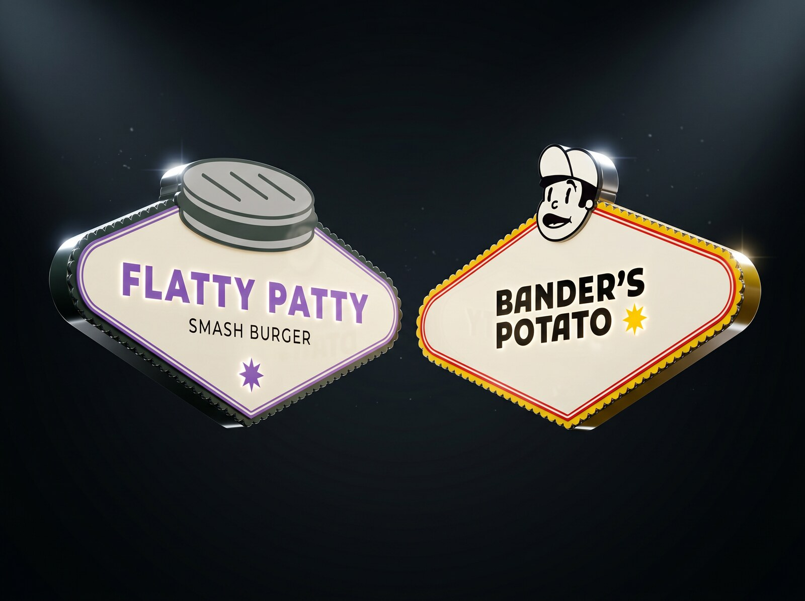
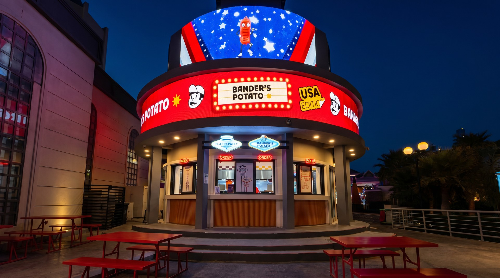
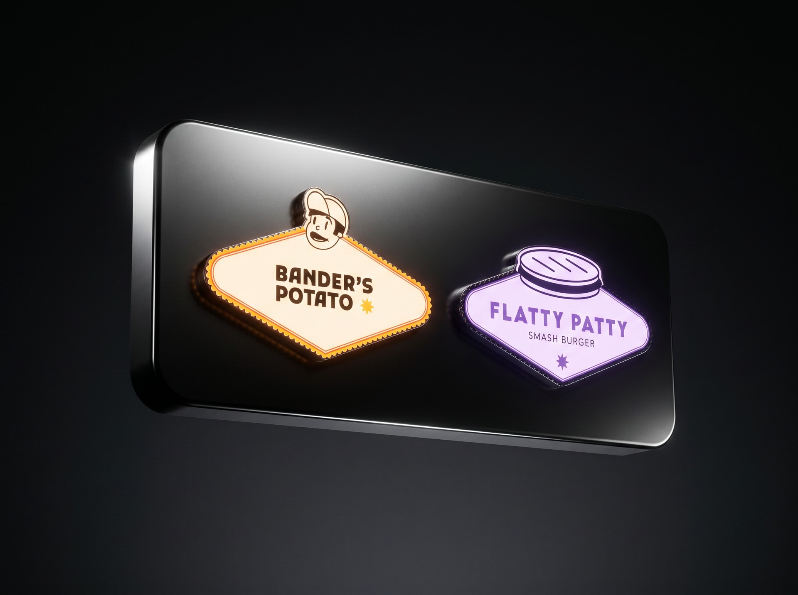
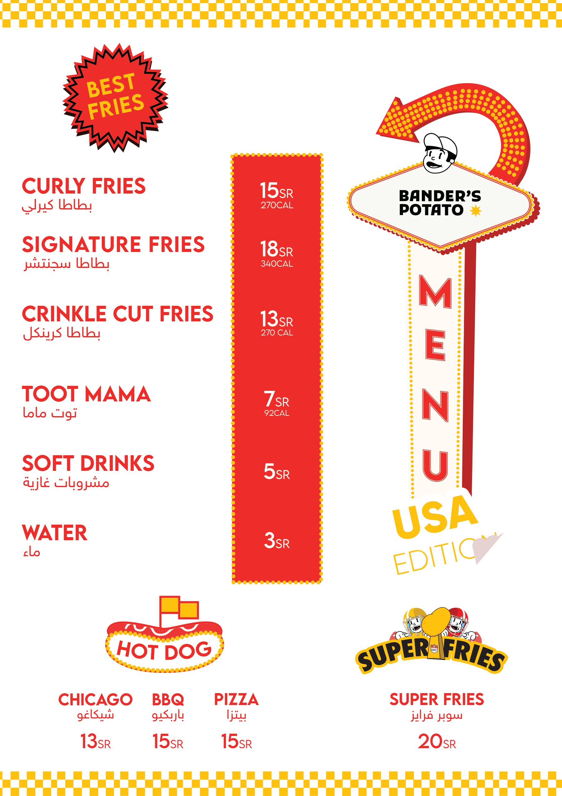
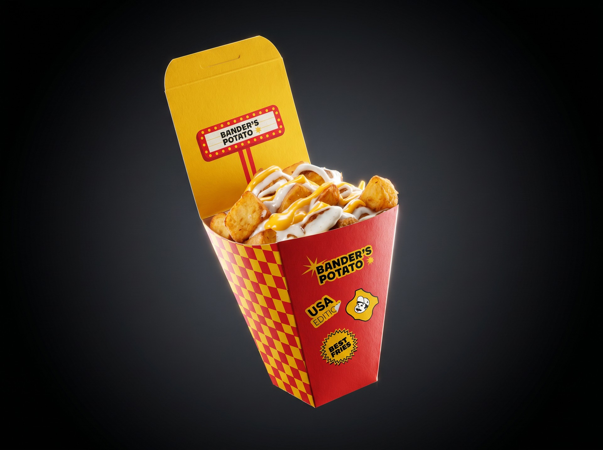
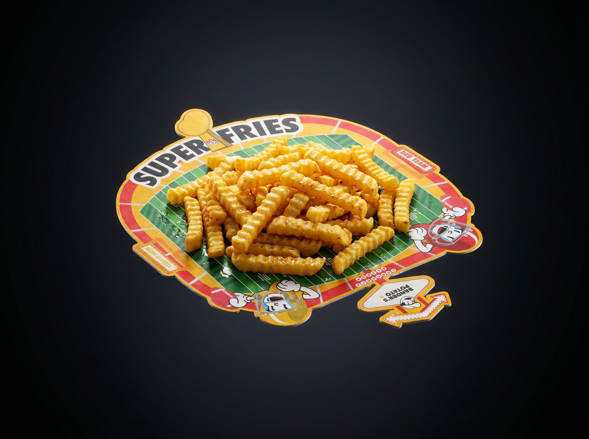
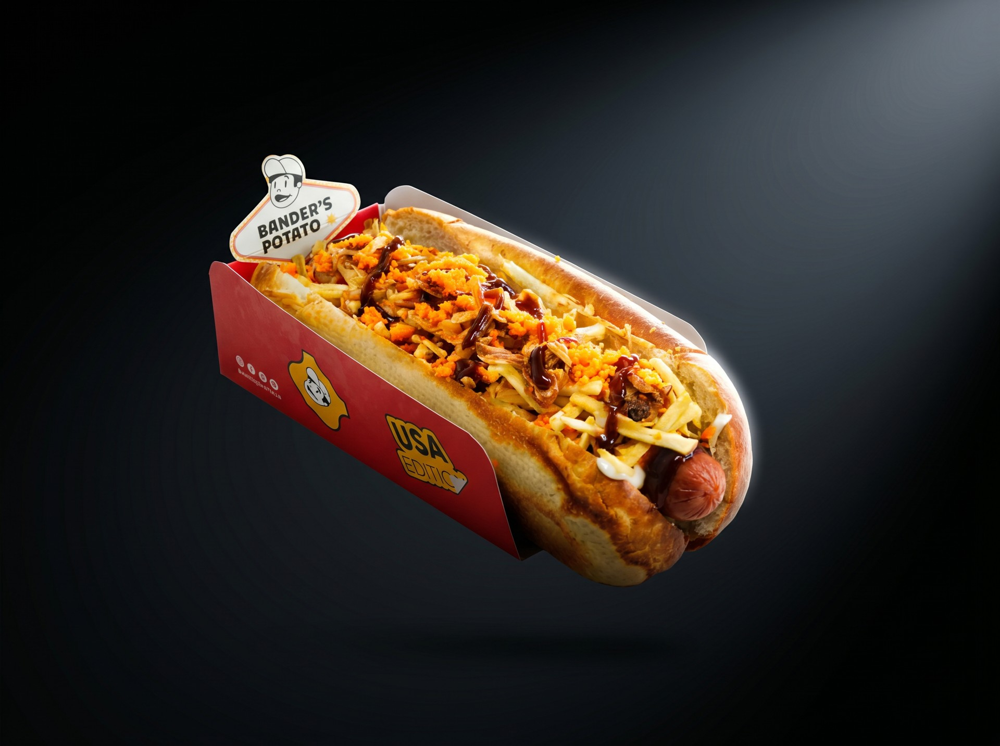
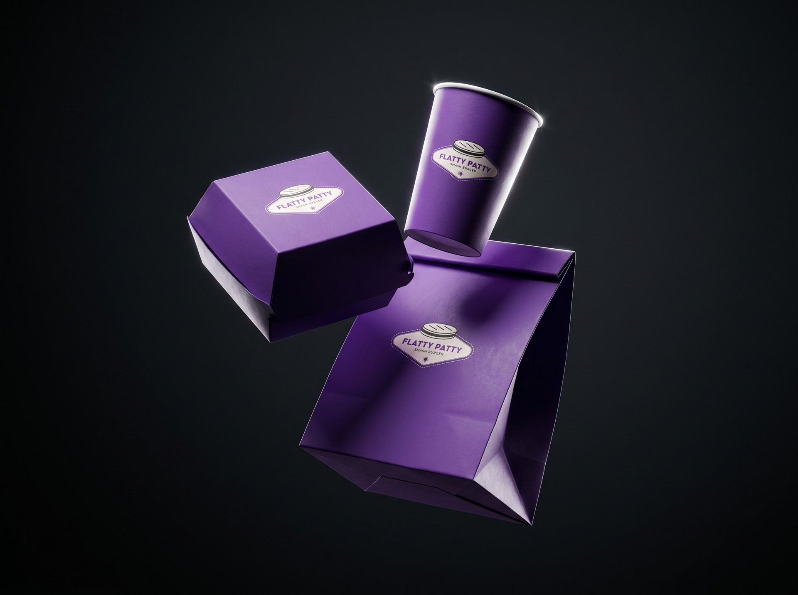

01
إطار اللافتة المشترك
صمّمنا للشعارين إطارًا واحدًا على هيئة لافتة أمريكية مضيئة، ومنه انطلقت كل تطبيقات التعاون.

هوية تعاون بنسخة أمريكية لكشك مشترك في بوليفارد سيتي، من الواجهة واللوحات إلى المنيو والتغليف.
صمّمنا ستيكرًا يأتي مع كل علبة بطاطا، يجمعه الزائر في بطاقة الولاء حتى يكسب طلبه المجاني.

صمّمنا للشعارين إطارًا واحدًا على هيئة لافتة أمريكية مضيئة، ومنه انطلقت كل تطبيقات التعاون.

صمّمنا لوحة واجهة مضيئة تجمع العلامتين جنبًا إلى جنب، فيُقرأ الاسمان معًا من بعيد.

بنينا منيو مشتركًا بروح اللافتات الأمريكية المضيئة، واضحًا وسهل القراءة من أمام الكشك.

صمّمنا العلبة بنقشة شطرنج حمراء وصفراء، وخبّأنا داخل غطائها لافتة تظهر لحظة الفتح.

صمّمنا الطبق على هيئة ملعب كرة قدم أمريكية، تحيةً لأجواء السوبر بول.

صمّمنا العلبة بلسان يرتفع خلف الساندويتش ويحمل لافتة بندر بطاطا.

نقلنا إطار اللافتة إلى تغليف فلاتي باتي، فصار امتدادًا طبيعيًا لهوية الكشك.